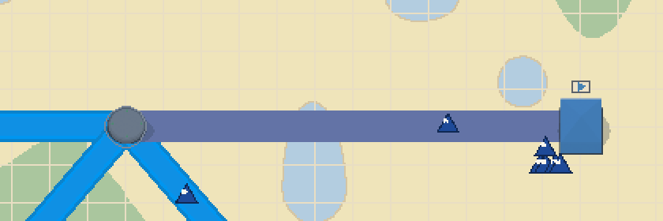
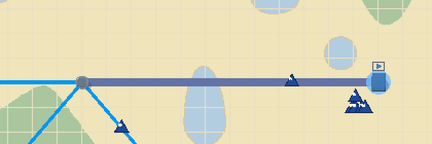
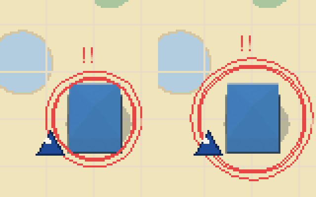
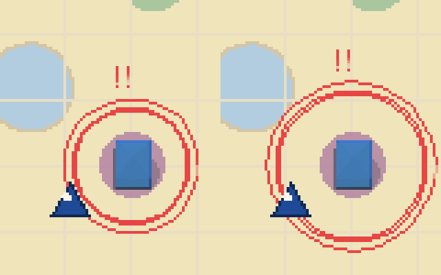
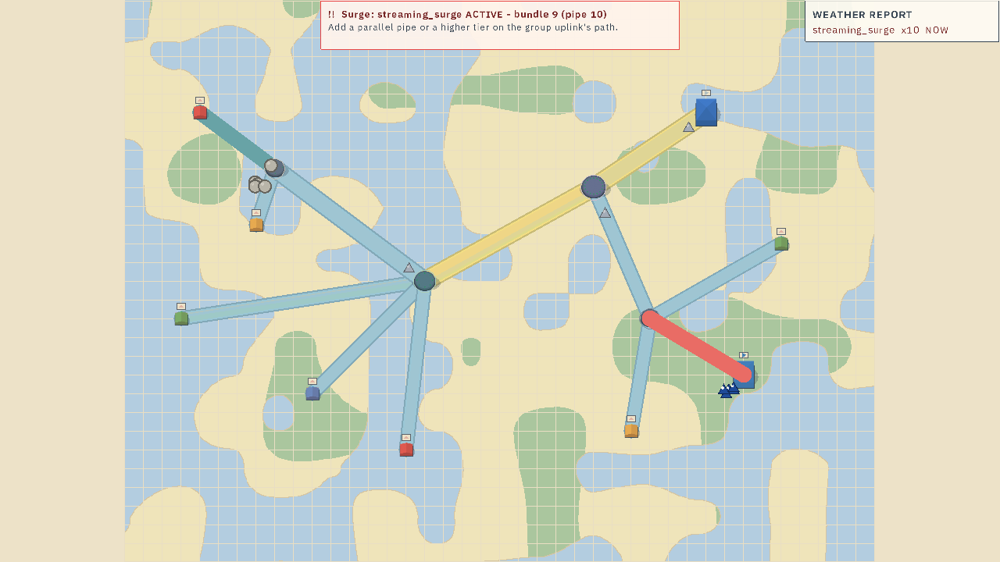
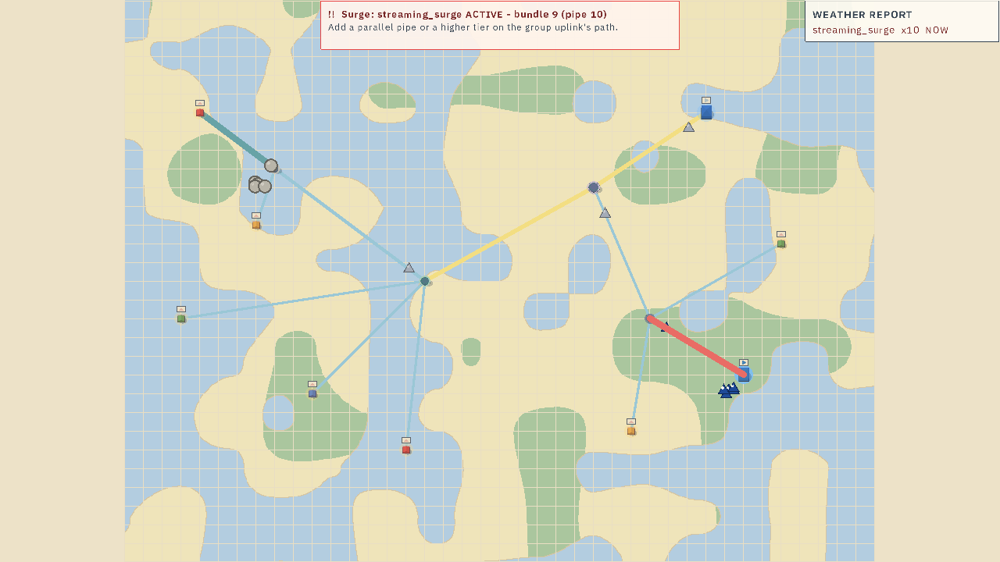
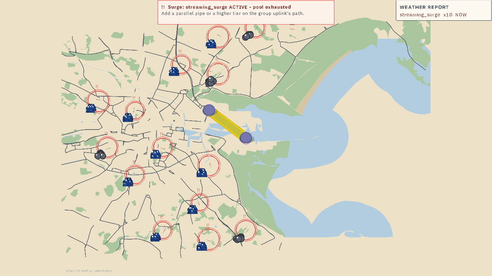
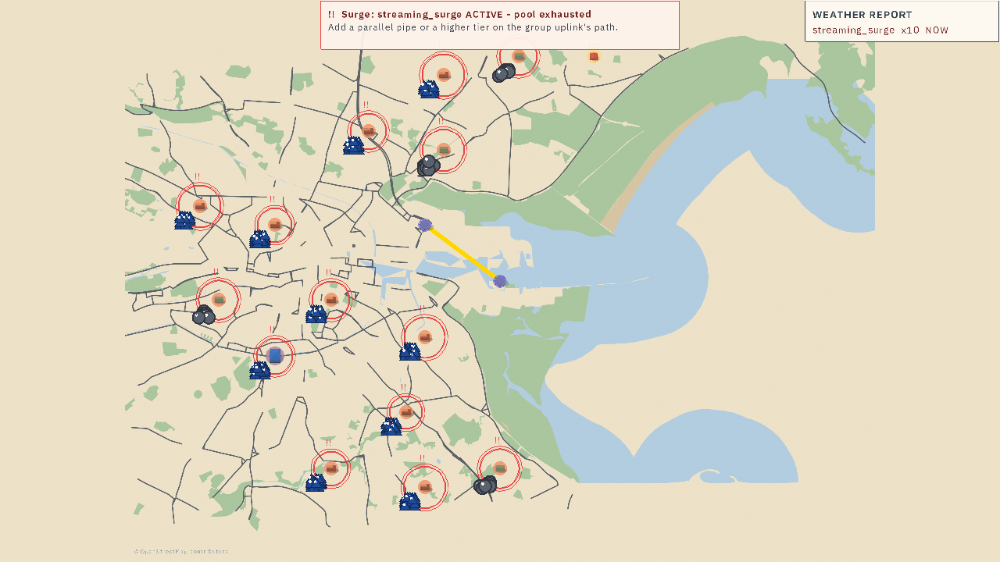

packet-plumber-v2-viscomm-regression-audit · READ-ONLY forensic audit · range 088cf00..03dd6f8 (PR #105 look-zoom-language, 5 commits) · 2026-08-27eb2e766 (L1 covenant/laneless), by ruling.| Effect (video class) | Added by | Status | Mechanical evidence | Severed by |
|---|---|---|---|---|
| Link congestion pulse — links telegraph congestion (restore-candidate #1, user-named) | pre-lane (4.1/7.5); #99 built around it | DEGRADED READMECHANISMS INTACT | Halo draw byte-identical both commits; link color steps steel×red → steel×amber at 44.4 s in BOTH strips; crisis outline swells on the same 16-tick PULSE16 phase both commits; ring pulses same 8-tick cycle. Stroke under the signal: 3.6–5.1× thinner; recolor ink ~6× less. | eb2e766 (L1) |
| Gauge telegraph — count-up lerp + flash-before-drain | #100 | INTACT | gauge.odin/health.odin: zero diff lines in range; palcheck §6 mid-ease legs green (fill at EASE16-predicted 212 px vs raw 182). | — |
| Crisis desaturation — the board goes quiet (contrast) | #102 | INTACT | juice@65s: 0 vivid-token px at BOTH commits; calm vivid ink 23,771 → 7,252 px (the thinner ladder, not the desat); palcheck §7a–f green. | — |
| Tie de-conflict — dashed violet vs solid amber | #99 | INTACT | palette.json untouched (#BA5EE8); tie_dash_on/draw unchanged; only width-covenant hunks in assist.odin. | — |
| Node telegraph — pulsing rings + !/!! glyphs | 5.2/7.3 | INTACT | Red ink cycles with the 8-tick (2.5 Hz) period at both commits; radius base s×0.95 unchanged; glyph + double ring in both crops. | — |
| Crisis outline swell — pulsing red stroke on the crisis bundle | 4.2/7.x | INTACT (thinner by covenant) | 16-tick swell both commits: 4367→5148→4367 px (before) vs 2175→2867→2175 px (after, ~55% ink on the capped stroke — d5dd5a6 fold). | width basis: d5dd5a6 |
| Packet affordance — trails, glints, rider lattice, involvement pins | 2.1/#102 | INTACT (lattice narrower) | Trail/glint/interp code identical; rider width now derives from the clamped stroke (documented covenant fallout). | — |
| Camera breath — auto-pullback on estate seeds (idle-motion) | pre-#105 | INTACT by default | L3 pin is scoped: pullback_feed early-return + target freeze under reduced_motion only (default off). Default behavior byte-identical; pullback_test green. | — |
| Lane stripes + lane-detail reveal (QoS lane read) | 7.1-era | LOST-BY-RULING | Stripe walks deleted in both branches; draw_path_offset_band deleted; lane_detail removed (0 refs); lane palette tokens zero consumers. Caps data seam survives. | eb2e766 (L1) |
| Dublin street blocks + their crisis recede | #95 am.#2 | LOST-BY-RULING | dublin_node_block_draw + seg grid deleted wholesale (−165 lines); sprites + wash (0.45) + chip + recede carry the jobs; palcheck §7f re-pinned to sprites; Dublin@90s diff 0.86%. | 5910ccd (L4) |
| Dusk dial / node ladder / ring floor / scale covenant | #105 (L1/L2/L4) | NEW — PRESENT + PINNED | Dusk dots visible in AFTER frames (host mauve halo, Dublin orange glows); shrink monotone 2427>285>67; ring floor pin green; stroke==table at all 3 rungs. | — |


The strip time-series at a fixed link pixel (x=780) — BOTH commits, identical phase:
| frames (50 ms) | link center color (BEFORE) | link center color (AFTER) | meaning |
|---|---|---|---|
| 44000–44350 | (99,115,166) |
(99,115,166) |
steel × state_critical red 43% — the link reads critical |
| 44400–44550 | (104,163,166) |
(104,163,166) |
steel × state_congested amber — the level crossed back under the threshold |
The "pulsating" you remember is this level-flicker plus the fat ribbon's glow. The flicker survives byte-identically; the ribbon is the part that went thin.


| crisis-red px per frame (juice 64–66.5 s strip) | period | |
|---|---|---|
| BEFORE | 4367 → 5148 → 4367 … | 16 ticks (PULSE16, phase tick+bundle) |
| AFTER | 2175 → 2867 → 2175 … | 16 ticks — identical phase; ~55% ink (outline hugs the covenant-capped stroke, d5dd5a6) |
| measure | BEFORE 088cf00 | AFTER 03dd6f8 | Δ |
|---|---|---|---|
| standard link @ fit zoom 1.0 (CORE rung) | 16.3 px + 4.5 casing | 3.5 px single stroke | 4.7× thinner |
| wide backbone @ fit | 23.1 px + casing | 6.0 px | 3.9× thinner |
| standard @ your resting zoom 2.0 (ACCESS) | 32.6 px + casing = 41.6 | 9.0 px | 3.6× thinner |
| wide @ resting zoom 2.0 | 46.2 px + casing = 55.2 | 9.0 px (ACCESS uniform) | 5.1× thinner |
| congested recolor area @ fit (per link length) | 21.3 px × L | 8.5 px × L | ~6× less ink |
Severance: eb2e766 — BUNDLE_EXTRA_WIDTH/CASING_OVERHANG/casing_color deleted; band_width re-derived
(tier+extra)×2.2 → link_width_world×scale; inline + routed draw_bundles rewrites. The halo draw itself (raw×0.57 + state×0.43,
w = band + 5×scale) has NO diff in the range.




Gates: AFTER golden corpus 49/49 green (byte-faithful build); palcheck all green at BOTH commits
(93 PASS lines after vs 70 before — the delta is the new look legs); odin test app/render 114 + odin test app 51 green.
Full per-row detail, code citations, and the four cleared suspects: viscomm-regression-audit.md in this directory.
Each row below is yours to rule. Pick an answer and queue it — one queued prompt per row, exact and actionable. Nothing is queued until you press the row's button; revise freely before queuing.
| Row | Status snapshot | Your call |
|---|---|---|
| R1 · Link congestion READ mechanisms intact; salience degraded. Restore option A1: congested-state min-width/halo bump — ~8–10 goldens re-blessed, no ruling conflict. |
DEGRADEDMECH INTACT |
A1 described in the appendix below; no calm-board geometry changes. |
| R2 · Lane stripes + lane-detail reveal lost-by-ruling (laneless, 08-26). A flag-gated return would be golden-neutral while off but reverses a recorded ruling. |
LOST-BY-RULING | |
| R3 · Dublin street blocks lost-by-ruling (sprites-only, 08-26); the sprite path carries the same information. |
LOST-BY-RULING | |
| R4–R11 · All other rows gauges, desat, tie, node rings, crisis swell, packet affordance, breath, new ladder/dial/floor — INTACT. |
INTACT |
| # | Option | Restores | Risk |
|---|---|---|---|
| A1 | Congested-link emphasis — for lvl≠None draw the halo at max(band + 5×scale, floor×scale), floor ≈ 10–14 world px (or +8..10×scale halo offset for red). Emphasis layer only; the covenant caps the STROKE, not the telegraph. |
the pulse READ (R1) | LOW-MED — re-bless ~8–10 congestion-bearing goldens (warn ×3, juice/a11y@65s ×6); re-pin palcheck §7 expectations; sim/log bytes untouched (ODN-1 safe). Reversible one-constant flip. |
| A2 | Ladder retune — raise link_base_world tables (e.g. ACCESS 4.5→7, CORE 3.5→5) or a mild pooled-growth step. |
overall link presence (R1 + the general "links look lost" read) | MED-HIGH — softens the ruled covenant; re-blesses ALL 49 demos; needs the LOOK-SPEC widths reversed. |
| A3 | Lane stripes behind a default-off flag — re-walk the surviving bundle_lane_caps_view seam in both draw branches. |
the QoS lane read (R2) | LOW while off (byte-neutral), but contradicts the recorded 08-26 laneless ruling. |
| A4 | Dublin blocks return — reinstate dublin_node_block_draw + seg grid from git behind a gate. |
the block look (R3) | MED — Dublin golden churn + ruling reversal; information value already covered by sprites. Not recommended. |
git log -S.
Vision used for screening only — every verdict rests on pixel numbers or code identity. Case file: viscomm-regression-audit.md.
Design source: the subject project's own palette tokens (packet-plumber data/palette.json — warm paper board, steel/amber network, violet info).